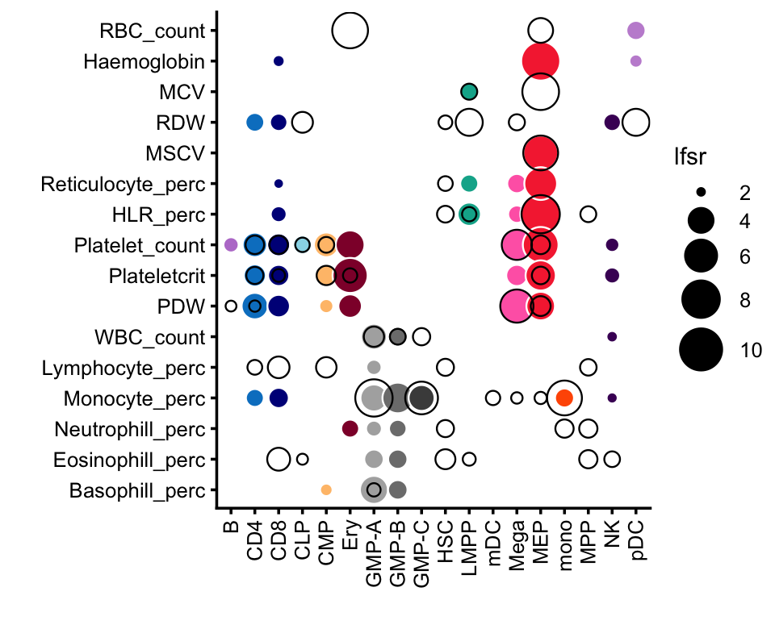

TO DO: Add summary of the gchromvar analysis here.
Load the packages used in the analysis.
library(chromVAR)
library(gchromVAR)
library(BuenColors)
library(SummarizedExperiment)
library(data.table)
library(BiocParallel)
library(BSgenome.Hsapiens.UCSC.hg19)
library(ggplot2)
library(cowplot)For reproducibility, set the seed.
set.seed(1)For a point of comparison, we will use the gchromVAR results from the Vuckovic et al paper (they were downloaded from here):
celltypes <- c("B","CD4","CD8","CLP","CMP","Ery","GMP-A","GMP-B","GMP-C",
"HSC","LMPP","mDC","Mega","MEP","mono","MPP","NK","pDC")
celltype_colors <- c(jdb_color_map(celltypes[1:11]),
c("yellow","hotpink"),
jdb_color_map(celltypes[14:18]))
vuckovic_traits <- c("rbc","mcv","hct","hgb","hlr","irf","mch","mchc","mrv",
"mscv","rdw_cv","ret","plt","mpv","pct","pdw","wbc",
"baso","eo","mono","neut","lymph")
vuckovic <- read.table("../data/vuckovic_gchromVAR_zscores_ukbb_v2.txt",
sep = "\t",header = TRUE,stringsAsFactors = FALSE)
vuckovic <- transform(vuckovic,
Celltype = factor(Celltype,celltypes),
Trait = factor(Trait,vuckovic_traits),
pval = pmin(pval,10))This plot reproduces Fig. 3A from the Vuckovic et al paper.
heatmap_colors <- c("#d7191c","#fdae61","#ffffbf","#abd9e9","#2c7bb6")
ggplot(vuckovic,
aes(x = Celltype,y = Trait,fill = Celltype,size = pval)) +
geom_point(shape = 21,color = "white") +
scale_size(range = c(0.65,6)) +
scale_fill_manual(values = celltype_colors,guide = "none") +
guides(size = guide_legend(override.aes = list(shape = 21,fill = "black"))) +
theme_cowplot(font_size = 9) +
labs(x = "",y = "") +
theme(axis.text.x = element_text(angle = 90,hjust = 1,vjust = 0.5))
This last code chunk is a record of the exact versions of the R packages used to generate the results:
sessionInfo()
# R version 3.6.2 (2019-12-12)
# Platform: x86_64-apple-darwin15.6.0 (64-bit)
# Running under: macOS Catalina 10.15.7
#
# Matrix products: default
# BLAS: /Library/Frameworks/R.framework/Versions/3.6/Resources/lib/libRblas.0.dylib
# LAPACK: /Library/Frameworks/R.framework/Versions/3.6/Resources/lib/libRlapack.dylib
#
# locale:
# [1] en_US.UTF-8/en_US.UTF-8/en_US.UTF-8/C/en_US.UTF-8/en_US.UTF-8
#
# attached base packages:
# [1] parallel stats4 stats graphics grDevices utils datasets
# [8] methods base
#
# other attached packages:
# [1] cowplot_1.1.1 BSgenome.Hsapiens.UCSC.hg19_1.4.0
# [3] BSgenome_1.54.0 rtracklayer_1.46.0
# [5] Biostrings_2.52.0 XVector_0.26.0
# [7] data.table_1.14.2 SummarizedExperiment_1.16.1
# [9] DelayedArray_0.12.3 BiocParallel_1.18.1
# [11] matrixStats_0.63.0 Biobase_2.46.0
# [13] GenomicRanges_1.38.0 GenomeInfoDb_1.22.1
# [15] IRanges_2.20.2 S4Vectors_0.24.4
# [17] BiocGenerics_0.32.0 BuenColors_0.5.6
# [19] ggplot2_3.3.6 MASS_7.3-51.4
# [21] gchromVAR_0.3.2 chromVAR_1.8.0
#
# loaded via a namespace (and not attached):
# [1] VGAM_1.1-5 colorspace_1.4-1
# [3] ellipsis_0.3.2 farver_2.0.1
# [5] DT_0.11 bit64_0.9-7
# [7] AnnotationDbi_1.48.0 fansi_0.4.0
# [9] splines_3.6.2 R.methodsS3_1.8.1
# [11] knitr_1.37 jsonlite_1.7.2
# [13] Rsamtools_2.0.3 seqLogo_1.50.0
# [15] annotate_1.64.0 GO.db_3.10.0
# [17] png_0.1-7 R.oo_1.24.0
# [19] shiny_1.7.4 readr_2.1.2
# [21] compiler_3.6.2 httr_1.4.2
# [23] assertthat_0.2.1 Matrix_1.3-4
# [25] fastmap_1.1.0 lazyeval_0.2.2
# [27] cli_3.5.0 later_1.0.0
# [29] htmltools_0.5.4 tools_3.6.2
# [31] gtable_0.3.0 glue_1.4.2
# [33] TFMPvalue_0.0.8 GenomeInfoDbData_1.2.2
# [35] reshape2_1.4.3 dplyr_1.0.7
# [37] Rcpp_1.0.8 jquerylib_0.1.4
# [39] vctrs_0.3.8 xfun_0.36
# [41] CNEr_1.22.0 stringr_1.4.0
# [43] mime_0.8 miniUI_0.1.1.1
# [45] lifecycle_1.0.3 poweRlaw_0.70.6
# [47] gtools_3.8.1 XML_3.99-0.3
# [49] zlibbioc_1.32.0 scales_1.1.0
# [51] hms_1.1.0 promises_1.1.0
# [53] yaml_2.2.0 memoise_1.1.0
# [55] sass_0.4.0 stringi_1.4.3
# [57] RSQLite_2.2.0 highr_0.8
# [59] caTools_1.17.1.3 rlang_1.0.6
# [61] pkgconfig_2.0.3 bitops_1.0-6
# [63] pracma_2.2.9 evaluate_0.14
# [65] lattice_0.20-38 purrr_0.3.4
# [67] labeling_0.3 GenomicAlignments_1.20.1
# [69] htmlwidgets_1.6.1 bit_1.1-15.2
# [71] tidyselect_1.1.1 plyr_1.8.5
# [73] magrittr_2.0.1 R6_2.4.1
# [75] generics_0.0.2 DBI_1.1.0
# [77] pillar_1.6.2 withr_2.5.0
# [79] KEGGREST_1.26.1 RCurl_1.98-1.2
# [81] tibble_3.1.3 crayon_1.4.1
# [83] utf8_1.1.4 plotly_4.10.1
# [85] tzdb_0.1.2 rmarkdown_2.21
# [87] TFBSTools_1.24.0 grid_3.6.2
# [89] blob_1.2.1 digest_0.6.23
# [91] xtable_1.8-4 tidyr_1.1.3
# [93] httpuv_1.5.2 R.utils_2.11.0
# [95] munsell_0.5.0 DirichletMultinomial_1.28.0
# [97] viridisLite_0.3.0 bslib_0.3.1